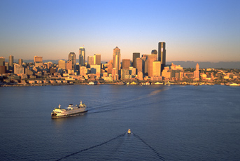
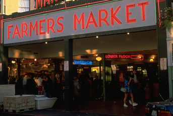
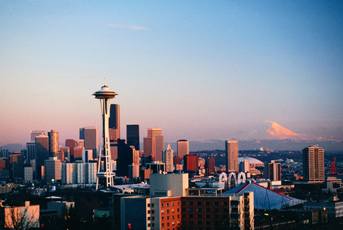

About
VLDB is a premier annual international forum for data management and database researchers, vendors, practitioners, application developers, and users. The conference will feature research talks, tutorials, demonstrations, and workshops. It will cover current issues in data management, database and information systems research. Data management and databases remain among the main technological cornerstones of emerging applications of the twenty-first century.
VLDB 2011 will take place at the Westin Hotel in Seattle, WA on August 29 - September 3. Seattle is the largest city in Washington State with over 3.3 million residents in the Seattle metropolitan area, around half of the state?s population. The city is situated on the shores of Puget Sound, a long narrow inlet from the Pacific Ocean. It has a vibrant economy with many well-known companies in aerospace, software, and retailing.
The University of Washington, located in Seattle, is one of the top research universities in the country and is particularly renowned for its medical education, care and research. Many companies and research centers in the medical and biological fields are clustered near the university. Washington State is also a major fruit and wine producer with vast orchards and vineyards east of the Cascade Mountains. Don?t miss the opportunity to sample some excellent Washington wines!